layout: true <div class="my-header"> <p class="align_left"><img src="images/yonsei_logo.png" style="height: 30px;"/></p> <p class="align_right"><b>Local linear regression</b></p> </div> <div class="my-footer"> <p class="align_right"><b>2021.09.24 ML Study</b></p> <p class="align_left"><b>Tae Geun Kim</b></p> </div> --- class: center, middle # Kernel Smoothing Method <h4 style="color:brown">Part 2 : Local Linear Regression</h4> <h3 style="color: darkblue">Tae Geun Kim</h3> --- ## Table of Contents -- * Review of Kernel Smoothing -- * Local Linear Regression --- class: center, middle # Review of Kernel Smoothing --- ### Moving Averages 1. kNN average $$\small \hat{f}(x) = \text{Ave}(y_i | x_i \in N_k(x))$$ -- * Simple -- * But there are unnecessary discontinuities. -- <br/> <br/> 2. Nadaraya-Watson kernel-weighted average $$\small \hat{f}(x) = \frac{\sum\_{i=1}^N K\_{\lambda}(x\_0, x\_i)y\_i}{\sum\_{i=1}^N K\_{\lambda}(x\_0, x\_i)} ~\text{ where } K\_\lambda(x_0, x) = D \left( \frac{|x - x_0|}{\lambda} \right)$$ -- * $\small D$ is a decreasing function & $\small \lambda$ is a width of window. -- * Continuous & smooth at everywhere. --- ### Kinds of Kernel * Epanechnikov kernel $$D(t) = \begin{cases} \small \dfrac{3}{4} (1 - t^2) & \small \text{if } |t| \leq 1 \\\\ \small 0 & \small \text{otherwise} \end{cases}$$ * Tri-cube kernel $$D(t) = \begin{cases} \small (1 - |t|^3)^3 & \small \text{if } |t| \leq 1 \\\\ \small 0 & \small \text{otherwise} \end{cases}$$ * Gaussian kernel $$D(t) = \frac{1}{\sqrt{2\pi}} \exp\left(-\dfrac{t^2}{2} \right)$$ --- ### kNN Smoothing .center[ 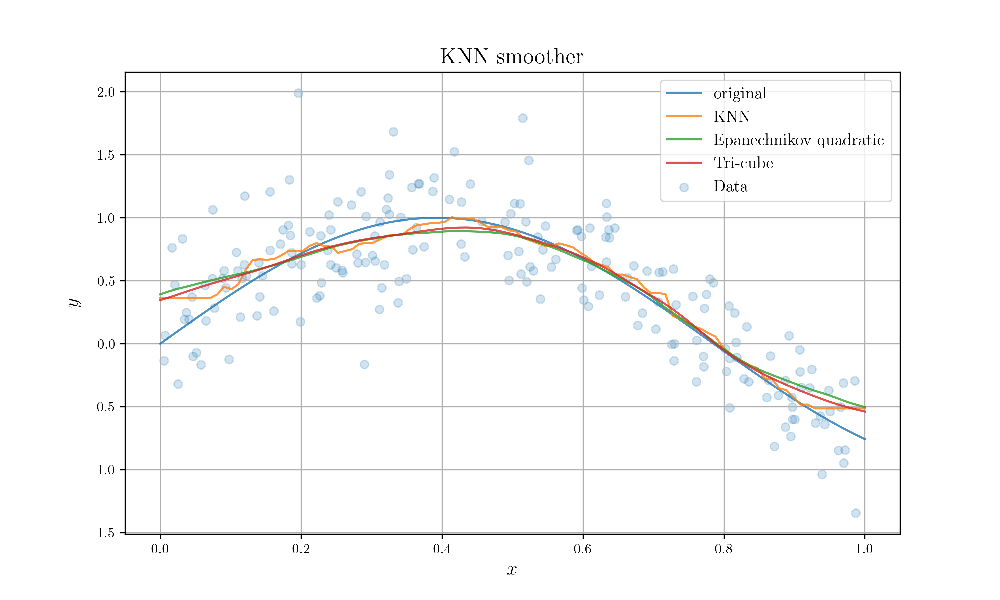 ] --- ### Width function of Kernel More generally, we can write a kernel as $$\small K\_\lambda(x\_0, x) = D \left( \frac{|x - x\_0|}{h\_\lambda(x\_0)} \right)$$ -- * $\small h_\lambda(x_0)$ is a width function of kernel. -- * For kNN: `\(\small h_k(x_0) = |x_0 - x_{[k]}|\)` where `\(\small x_{[k]}\)` is the k-th nearest neighbor of $x_0$. * For Epanechnikov: $\small h_\lambda(x_0) = \lambda$ -- * High $\small \lambda$ generates low variance & high bias. .center[ 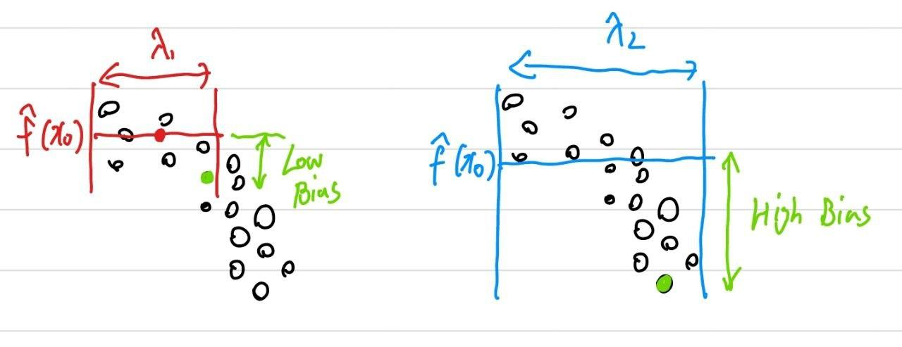 ] --- ### Problem of Nadaraya-Watson Average * kNN & Nadaraya-Watson moving average causes "**Asymmetry**" at boundary. .center[ 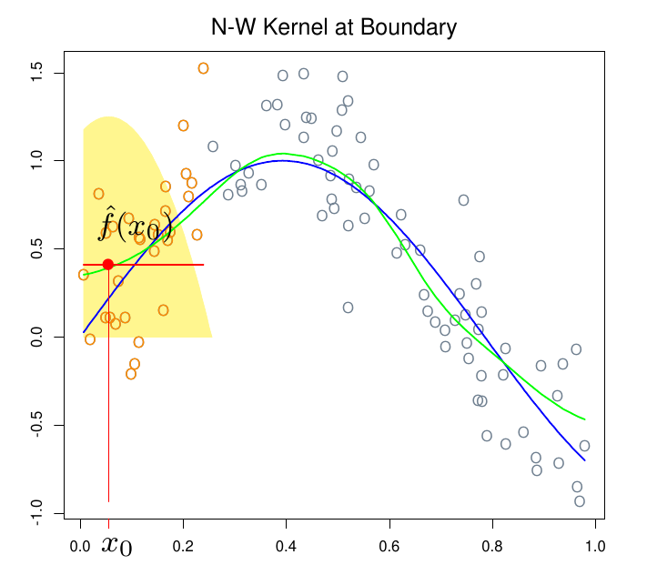 ] * This is because of the our assumption that `\(\small \hat{f}(x_0)\)` is constant in the neighborhood of $\small x_0$. --- class: center, middle # Local Linear Regression --- ### Local Linear Regression Let's use **straight line** rather than a constant. $$\small \hat{f}(x\_0) = \hat{\alpha}(x\_0) + \hat{\beta}(x\_0)x\_0$$ -- <br/> It is come from the following optimization problem. $$\begin{aligned} \small (\hat{\alpha}(x\_0),~\hat{\beta}(x\_0)) &= \underset{\alpha(x\_0), \beta(x\_0)}{\text{min}} \frac{\sum\_{i=1}^N K\_\lambda(x\_0, x\_i)\left( y\_i - \hat{\alpha}(x\_0) - \hat{\beta}(x\_0)x\_i \right)^2}{\sum\_{i=1}^N K\_\lambda(x\_0, x\_i)} \\\\ &= \underset{\alpha(x\_0), \beta(x\_0)}{\text{min}} \sum\_{i=1}^N K\_\lambda(x\_0, x\_i)\left( y\_i - \hat{\alpha}(x\_0) - \hat{\beta}(x\_0)x\_i \right)^2 \end{aligned}$$ --- ### Local Linear Regression We can solve this problem by differentiation. .center[ 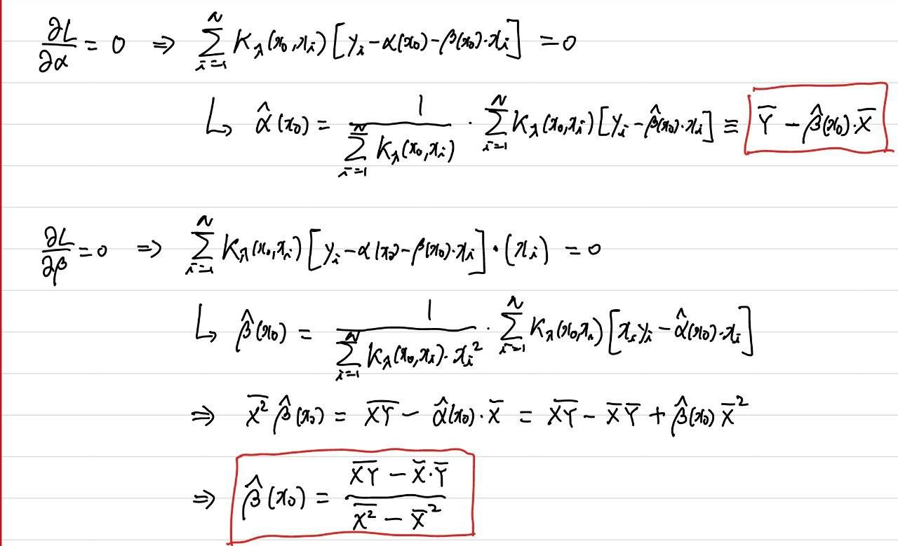 ] --- ### Local Linear Regression And also we can describe the problem as Vector notation. .center[ 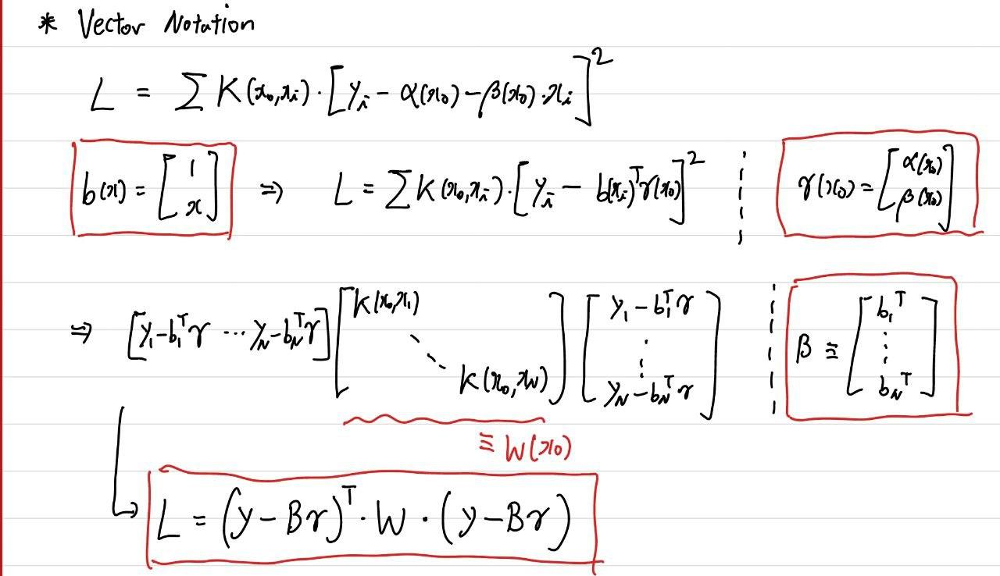 ] --- ### Local Linear Regression And differentiate it. .center[ 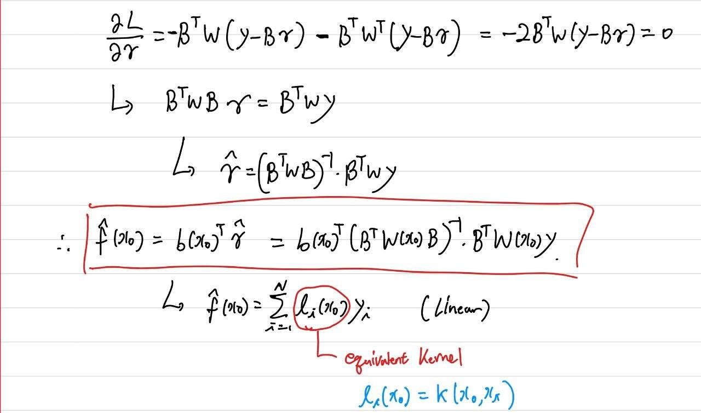 ] --- ### Bias Correction Local linear regression fully corrects the bias up to 1st order. .center[ 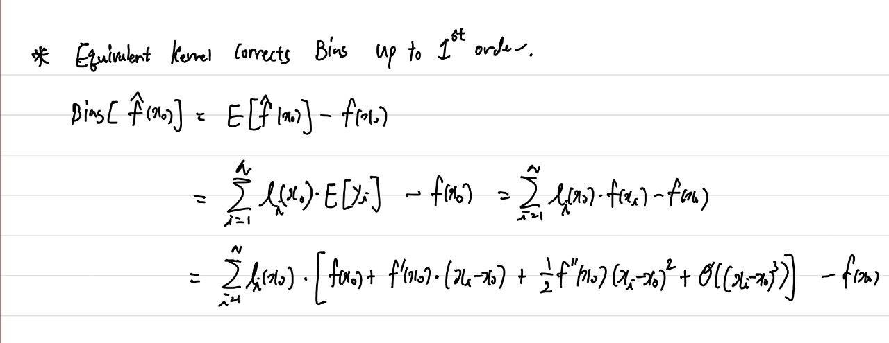 ] --- ### Bias Correction Equivalent kernel has two properties. .center[ 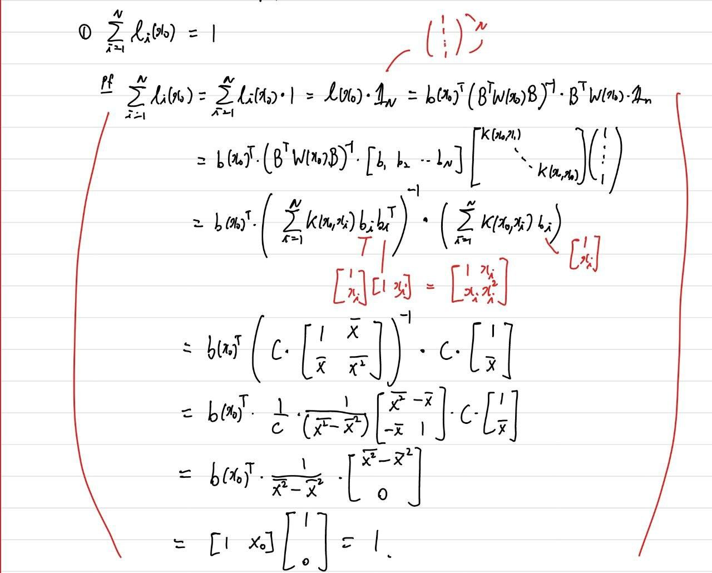 ] --- ### Bias Correction Equivalent kernel has two properties. .center[ 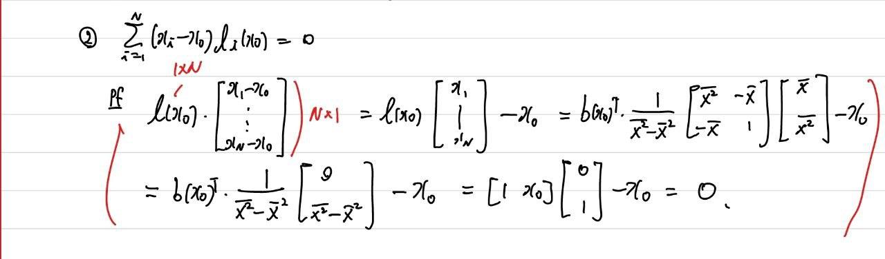 ] --- ### Bias Correction Therefore, .center[ 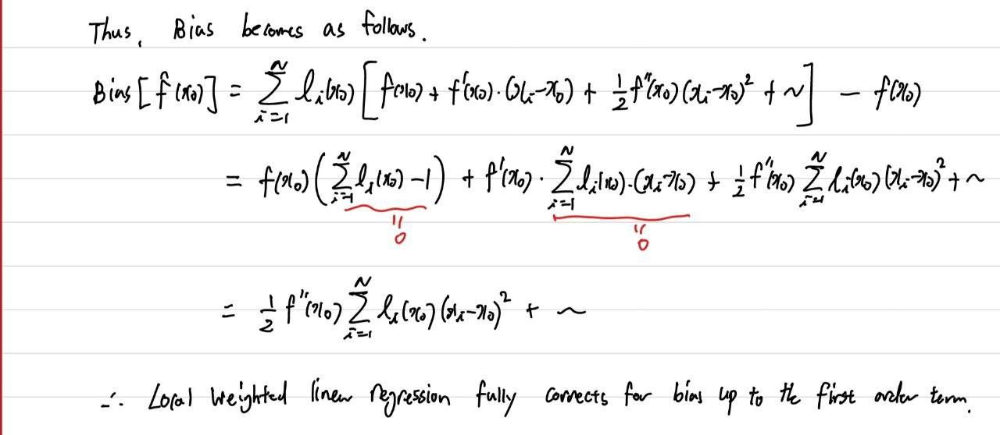 ] --- ### Results .center[ 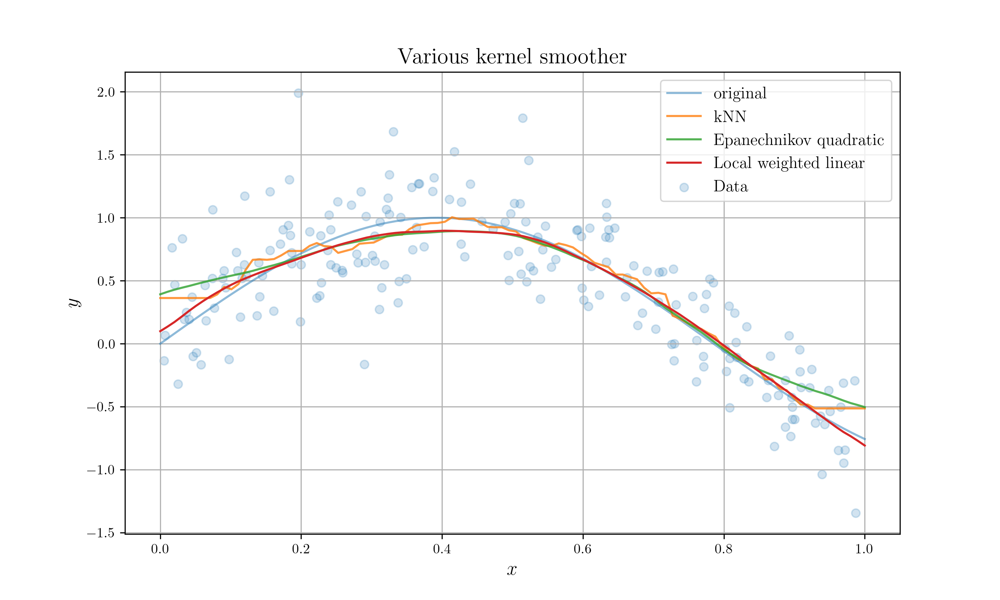 ] --- ### References * T. Hastie et al., *The Elements of Statistical Learning 2nd ed*, Springer (2009) --- class: center, middle # Thank you!